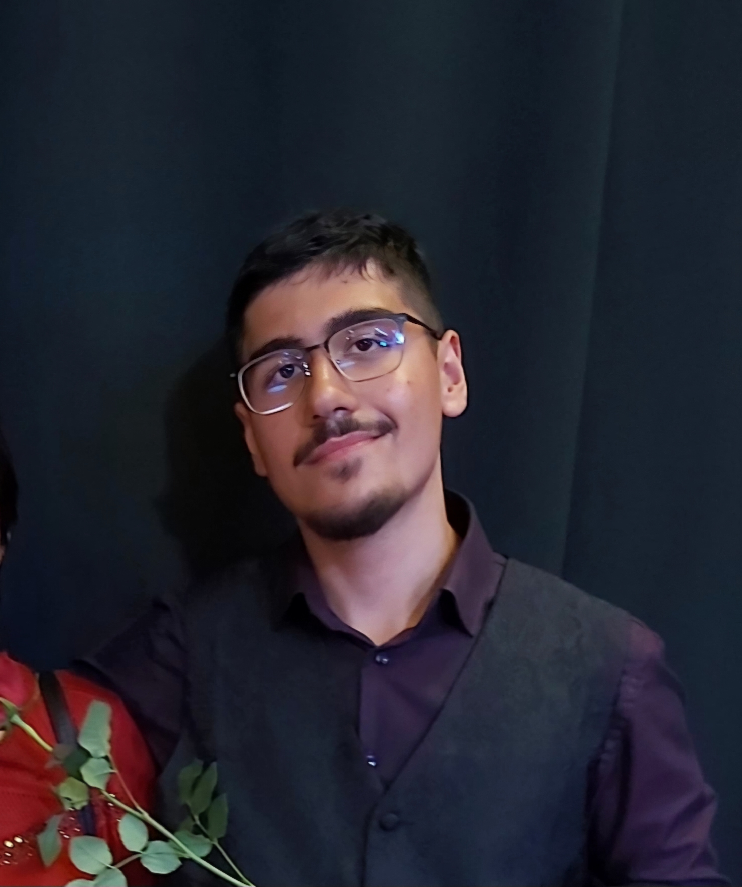

Portfolio
Navigations Leiste:
Letzte Aktualiesierung 25.Januar 2025 9:50
Über mich
Ich bin Olcay, YouTuber und Entwickler kreativer Projekte. Hier findest du eine Auswahl meiner bisherigen Arbeiten und Erfahrungen.

Wer bin ich?
Ich bin Olcay, leidenschaftlicher YouTuber mit Fokus auf Bildung, Dokus und kreative Projekte. Nebenbei beschäftige ich mich mit Programmierung und Design.
📄 Lebenslauf ansehen 📄 Praktikumsdokumente Boels ansehen